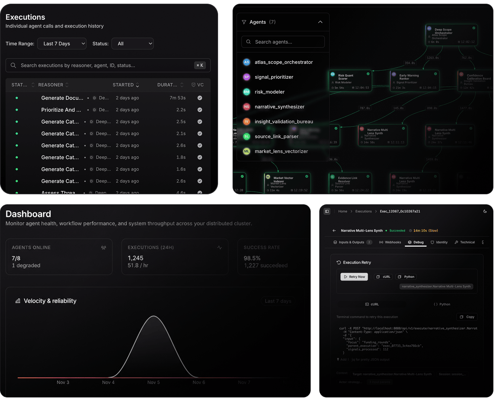

Agent control plane · interactive UI preview
AgentField
Control plane for agent nodes, sessions, traces and configuration.
AUI
ORIGINAL SOURCE INTERFACE
AgentField as shown by its source
Original AgentField dashboard, executions and workflow graph. The image is a reference; the local controls are in the interactive study below.

INTERACTIVE LOCAL STUDY
Explore the controls
A AgentField CONTROL PLANE
SOURCE SAMPLE · LOCAL UIDashboard
Monitor agent health, workflow performance, and system throughput.
AGENTS ONLINE7/81 degraded
EXECUTIONS (24H)1,24551.8 / hr
SUCCESS RATE98.5%1,227 succeeded
Velocity & reliabilityLast 7 days
Nov 3Nov 4Nov 5Nov 6Nov 7
Executions
Individual agent calls and execution history from the source example.
| Status / reasoner | Agent | Started | Duration | Result |
|---|---|---|---|---|
| Generate Document | narrative_synthesizer | 2 days ago | 7m 53s | Succeeded |
| Prioritize And Score | signal_prioritizer | 2 days ago | 2.2s | Succeeded |
| Generate Category | risk_modeler | 2 days ago | 2.5s | Succeeded |
| Assess Threats | atlas_scope_orchestrator | 2 days ago | 4.6s | Succeeded |
Rows reproduce labels from the upstream screenshot. Filtering runs in this browser; no execution service is connected.
Agents
Browse the seven source example agents.
- ATatlas_scope_orchestrator●
- SIsignal_prioritizer●
- RIrisk_modeler●
- NAnarrative_synthesizer●
- INinsight_validation_bureau●
- SOsource_link_parser●
- MAmarket_lens_vectorizer●
Deep Scope
Orchestrator
Orchestrator
Risk Quant
Scorer
Scorer
Early Warning
Ranker
Ranker
Confidence
Calibration
Calibration
Market Vector
Indexer
Indexer
Evidence Link
Resolver
Resolver
Narrative Multi
Lens Synth
Lens Synth
Workflow graph
Source-style execution lineage for a local example.
Scope Orchestrator
Risk Modeler
Signal Prioritizer
Narrative Synthesizer
Completed result
SOURCE & INSTALLATION
Continue from the original project
Official 0.1.142 native release ran locally in prior task with persistent config test.
- Checkout
- Shallow source checkout
- Revision
3e7bf93e083f- Licence noted
- Apache-2.0
- This page
- Local UI preview